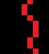
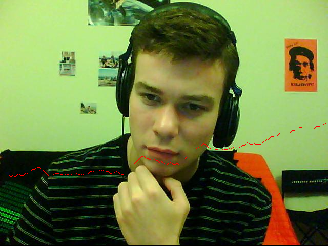
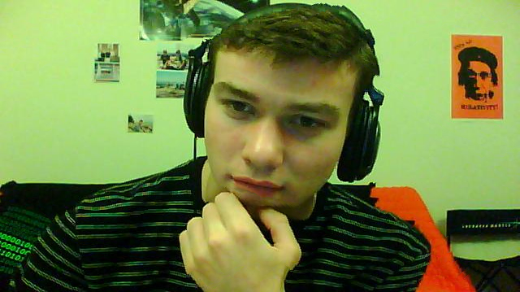
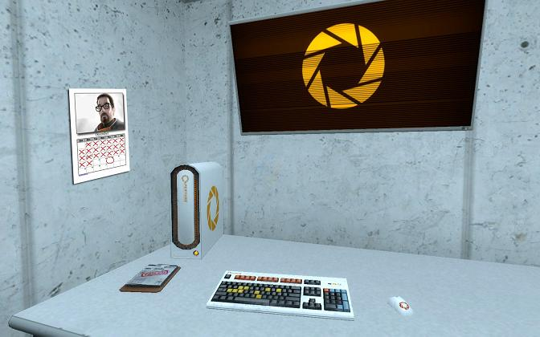
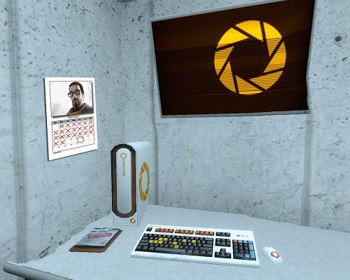
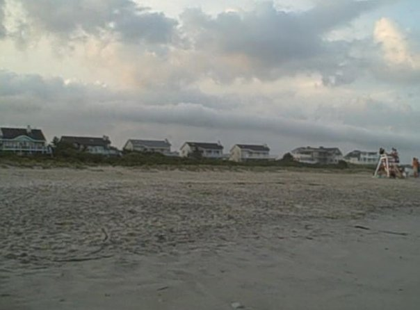
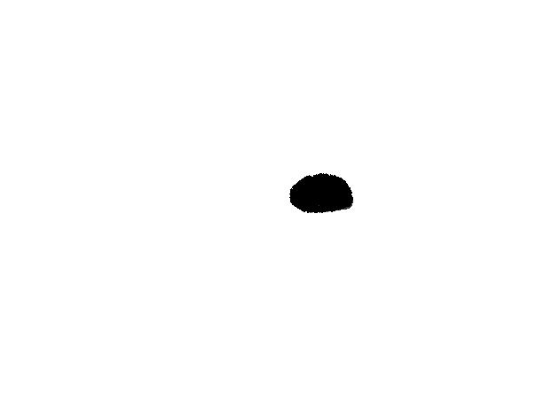
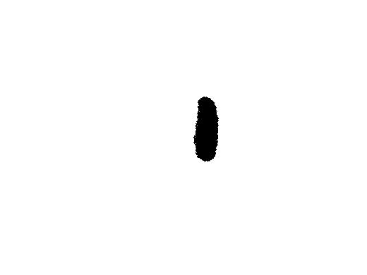
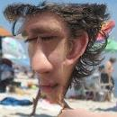
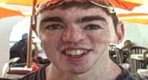

Seam Carving
Purpose / Algorithm
Simply scaling an image down will blur important areas just as much as unimportant areas (e.g. a huge sky background with little variation will be blurred just the same as someone's face in the foreground). The seam carving algorithm is a "content aware image resizer"; that is, it tries to do a better job than just uniform scale by choosing to erase areas of the image that are "less noticeable." It removes a "seam" from an image, which is a line of connected pixels from top to bottom or left to right whose presence is the least noticeable if removed. This "least noticeable" effect is determined by applying an objective function to every possible seam. The choice of objective function in this assignment is the absolute sum of both gradient components. Minimizing this ensures that regions with the least energy/detail get removed first.
Implementation Details
- The first step in the algorithm is to calculate the gradient of the image. This is done with a gaussian just as in the canny edge detector tutorial. Then, an "energy image" (the objective function at each pixel) is created by taking abs(Fx) + abs(Fy). This image is then normalized.
- The next step of the algorithm is to take this image and to find the path of minimum cost in the energy image either from top to bottom or from left to right (the seam). Each pixel in this path must be connected to a pixel either directly below it, directly below and to the left, or directly below and to the right. This means a method of dynamic programming can be used instead of BFS or DFS. That is, for each pixel in each row, the min cost path to get to that pixel is that pixel's weight plus the minimum of the three pixels above it. Back tracing can then be done starting at the minimum weight pixel at the bottom, to determine what the seam path was.

- I first wrote the code to calculate a vertical seam with dynamic programming. After this, all I had to do to find horizontal seams was to send the transpose of my image to the vertical seam function.
- When retargeting an image, I calculate the min horizontal seam AND the min vertical seam at each step, and I compare their weights. I always remove the min cost seam between the two so that the most energy is preserved
- NOTE ALSO: The seam calculation process is extremely expensive in matlab since it requires making nested for loops (matlab doesn't deal well with for loops in general). On larger images, it can take over a second per step since it has to calculate both the vertical and horizontal seams.
- Once the min seam has been found, the final step is to remove it. This requires shifting all pixels to the right of it over one to the left, and then deleting the final row. I do this to the grayscale image and the color image in parallel
Results
First, here is an example of the energy image and the minimum vertical and horizontal seams for an image:|  | |
Here is an example of the image sized by 25% down in both the horizontal and vertical directions
|  | |
| Sized down to 75% horizontally (new resolution 480x480). Note how well all of the important features and sizes are preserved. My face has barely changed in size, and all of the pictures in the background are still in tact, since the seams mostly only removed sections of the couch and the blank wall in the background that are unimportant. | Sized down to 75% in vertical direction (new resolution 640 x 360). NOTE that my hair is a bit distorted here since there are many fewer horizontal seams than vertical seams (so distortion is inevitable). But the sizes of all of the rest of the features turned out well. |
Here is another example:
|  |  |
| Original image (672x420) | Retargeted image (500x400) |
Here is another example:
| Original image (615x372) | Retargeted image (450x350) |
One last example:
| Original image (576x432) | Retargeted image (400x400) |
Remove Feature Extension
One trick that can be played with seam carving is to intentionally zero regions of the objective energy function so certain regions of the image get removed first. I extended my seam carver so that the user can supply an extra black/white image, where black regions will be marked to zero in the energy image. Here are a few examples with this extension:|  |  |
| Original Image | House marked for removal |
| Result of resizing |
Here is a slightly better result:
|  | |
| Original Image | Person marked for removal |
| Result of resizing |
This example worked much better, since the sky, the water, and the sand are all very homogeneous and removing seams that go through the child standing there is much less noticeable.
Pushing It Too Far
This algorithm works very well in general, especially for large images with lots of seams. However, if you try to push it too far (by say, resizing the image to a third of its original dimensions), you'll end up getting some pretty weird (and hilarious) results. I devoted an entire Facebook album to using this algorithm to create demented images of my friends. I've posted some of them below for your viewing pleasure. If you look closely you can see which features had the highest energy seams (for some the nose stayed, for some the lips stayed, for some the hair stayed). Enjoy!|  | |||
|  | |||
Code Summary
| Filename | Description |
| EnergyImg.m | Calculates the objective function for a grayscale image, using the gradient method discussed above |
| find_vertical_seam.m | Finds the minimum cost vertical seam using dynamic programming |
| find_horizontal_seam.m | Finds the minimum cost horizontal seam by calling the vertical seam function with the transpose of the grayscale image |
| markSeam.m | Marks a horizontal or vertical seam in red in the color image |
| remove_horizontal_seam.m | Removes a horizontal seam from an image and shifts all of the pixels below it up, then removes the last row |
| remove_vertical_seam.m | Removes a vertical seam from an image and shifts all of the pixels to the right of it to the left, then removes the last column |
| seam_carve_extended.m | Takes a filename for the image, a filename for the regions to be removed (the extra step I did), and a target number of rows and columns. This will resize the image to the target size by removing horizontal and vertical seams one by one |
| seam_carve.m | An overloaded version of the seam carver that doesn't take a remove image. |
blog comments powered by Disqus